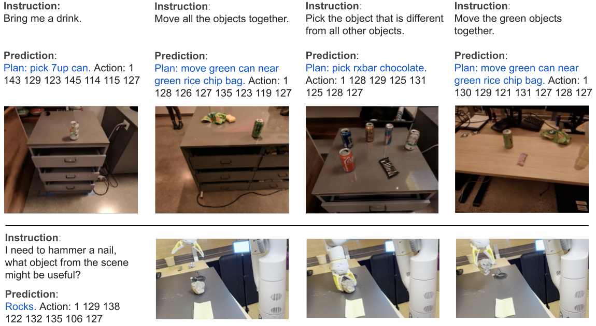

RT-2: Vision-Language-Action Models Transfer Web Knowledge to Robotic Control
- Montse Gonzalez Arenas
- Anthony Brohan
- Noah Brown
- Justice Carbajal
- Yevgen Chebotar
- Xi Chen
- Krzysztof Choromanski
- Tianli Ding
- Danny Driess
- Avinava Dubey
- Chelsea Finn
- Pete Florence
- Chuyuan Fu
- Keerthana Gopalakrishnan
- Kehang Han
- Karol Hausman
- Alex Herzog
- Jasmine Hsu
- Brian Ichter
- Alex Irpan
- Nikhil Joshi
- Ryan Julian
- Dmitry Kalashnikov
- Yuheng Kuang
- Isabel Leal
- Lisa Lee
- Tsang-Wei Edward Lee
- Sergey Levine
- Yao Lu
- Henryk Michalewski
- Igor Mordatch
- Karl Pertsch
- Kanishka Rao
- Krista Reymann
- Michael Ryoo
- Grecia Salazar
- Pannag Sanketi
- Pierre Sermanet
- Jaspiar Singh
- Anikait Singh
- Radu Soricut
- Huong Tran
- Vincent Vanhoucke
- Quan Vuong
- Ayzaan Wahid
- Stefan Welker
- Paul Wohlhart
- Jialin Wu
- Fei Xia
- Ted Xiao
- Peng Xu
- Sichun Xu
- Tianhe Yu
- Brianna Zitkovich
Authors listed in alphabetical order (see paper appendix for contribution statement).
Abstract
We study how vision-language models trained on Internet-scale data can be incorporated directly into end-to-end robotic control to boost generalization and enable emergent semantic reasoning. Our goal is to enable a single end-to-end trained model to both learn to map robot observations to actions and enjoy the benefits of large-scale pretraining on language and vision-language data from the web. To this end, we propose to co-fine-tune state-of-the-art vision-language models on both robotic trajectory data and Internet-scale vision-language tasks, such as visual question answering. In contrast to other approaches, we propose a simple, general recipe to achieve this goal: in order to fit both natural language responses and robotic actions into the same format, we express the actions as text tokens and incorporate them directly into the training set of the model in the same way as natural language tokens. We refer to such category of models as vision-language-action models (VLA) and instantiate an example of such a model, which we call RT-2. Our extensive evaluation (6k evaluation trials) shows that our approach leads to performant robotic policies and enables RT-2 to obtain a range of emergent capabilities from Internet-scale training. This includes significantly improved generalization to novel objects, the ability to interpret commands not present in the robot training data (such as placing an object onto a particular number or icon), and the ability to perform rudimentary reasoning in response to user commands (such as picking up the smallest or largest object, or the one closest to another object). We further show that incorporating chain of thought reasoning allows RT-2 to perform multi-stage semantic reasoning, for example figuring out which object to pick up for use as an improvised hammer (a rock), or which type of drink is best suited for someone who is too sleepy (an energy drink).
Approach Overview

To make RT-2 easily compatible with large, pre-trained vision-language models, our recipe is simple: we represent robot actions as another language, which can be cast into text tokens and trained together with Internet-scale vision-language datasets. In particular, we co-fine-tune (a combination of fine-tuning and co-training where we keep some of the old vision & text data around) an existing vision-language model with robot data. The robot data includes the current image, language command and the robot action at the particular time step. We represent the robot actions as a following text string:

Since actions are represented as text strings, one can think of them as another language that allows us to operate the robot. This simple representation makes it straightforward to fine-tune any existing vision-language model and turn it into a vision-language-action model
During inference, the text tokens are de-tokenized into robot actions, enabling closed loop control.This allows us to leverage the backbone and pretraining of vision-language models in learning robotic policies, transferring some of their generalization, semantic understanding, and reasoning to robotic control.

Results

Something about emergent properties

Here we talk about generalization evals

Here we present the generalization eval results
We do an ablation

To make results reproducible we also train it on langtable

Lastly CoT

Videos
Below, we show a few videos showing examples of RT-2 execution. We show that RT-2 is able to generalize to new objects, new environments, and new tasks. RT-2 is able to generalize to a variety of real-world situations that require reasoning, symbol understanding, and human recognition.
RT-2 can exhibit signs of chain-of-thought reasoning similarly to vision-language models. We qualitatively observe that RT-2 with chain-of-thought reasoning is able to answer more sophisticated commands due to the fact that it is given a place to plan its actions in natural language first. This is a promising direction that provides some initial evidence that using LLMs or VLMs as planners can be combined with low-level policies in a single VLA model.
Finally, we show that RT-2 can work on another embodiment, Language Table environment. We show that RT-2 can handle real-world out-of-distribution behaviors in the Language Table environment.
Citation
Acknowledgements
The authors would like to acknowledge Jodi Lynn Andres, Carolina Parada, Joseph Dabis, Rochelle Dela Cruz, Jessica Gomez, Gavin Gonzalez, Tomas Jackson, Jie Tan, Scott Lehrer, Dee M, Utsav Malla, Sarah Nguyen, Emily Perez, Elio Prado, Jornell Quiambao, Clayton Tan, Jodexty Therlonge, Wenxuan Zhou, and the greater Google DeepMind team for their feedback and contributions.
The website template was borrowed from Jon Barron.